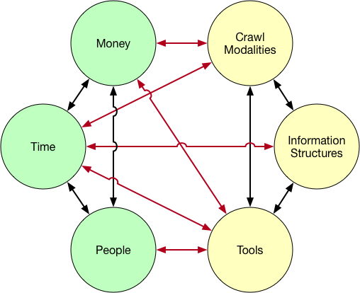
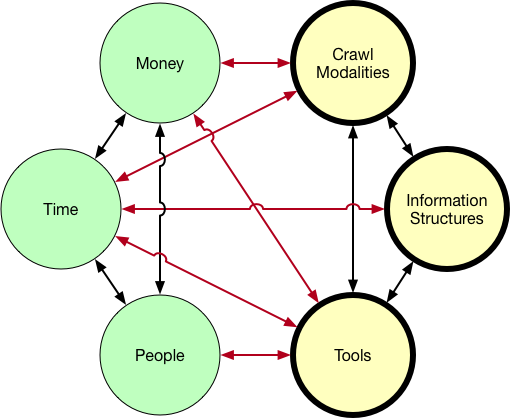
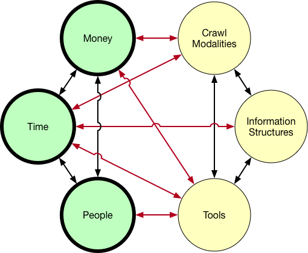

Overview
Appraisal in Web Archives
Research Question
Methodology
Findings
Future Work
How much of the web is in the Internet Archive?1 / 1,000,000,000,000 2 = .273 ???
1. Alpert, J. and Hajaj, N. (2008). We knew the web was big... Google.Defining Web pages, Web sites and Web captures . Internet Archive.
So I'm curious, just by a show of hands, how many people have
heard about the Internet Archive before. How many of you had
occacsion to use it?
510 billion objects or web captures.
361 million websites
15 petabytes of storage
David Rosenthal of Stanford University has predicted that by
2018 it will cost more than the total GWP (Gross World Product)
to store that year's data on Amazon S3.
Archival coverage of the NYTimes homepage in 2016.
The Internet Archive uses automated agents, spiders or
bots to automatically crawl the Internet and archive material.
As you can see from their coverage of the NYTimes homepage
for 2016. On December 13th there were 103 snapshots just
of the homepage itself.
Archival coverage of Igor Strelkov's VKontakte profile in 2014.
This is the coverage for Igor Strelkov's profile page on VKontakte
which is a popular Russian social media site. Strelkov is
currently being sued by the families of 18 passengers on MH17
because he gave the order to shoot down the civilian aircraft
thinking it was a Ukrainian military plane. We only know
of his role because he posted on VKontakte about shooting down the
aircraft, but deleted his post and his account on learning that it
was in fact a civilian aircraft.
Anatol Shmelev is a research fellow, curator of the Russia and
Eurasia Collection, and the project archivist for the Radio Free
Europe/Radio Liberty Collection, at the Hoover Institution.
In mid-July you can that Anatol added this webpage to a list of
URLs to be routinely crawled by Archive-It to become par of a
Ukrainian Conflict collection.
Archive-It: 400 partner organizations in 48 U.S. states
and 16 countries worldwide.
Appraisal
The process of identifying materials offered to an archives that
have sufficient value to be accessioned.
Appraisal in A Glossary of Archival and Records Terminology. Society of American Archivists.
For over a hundred years Archivists have developed appraisal theory
which provides practical guidance on the selection of material for
archives. Appraisal theories have often been pragmatic in nature,
because they are anchored in the contingencies of printing and
publishing technologies available at the time.
As we just saw in previous examples these theories are now being
adapted to the web environment. Some appraisal decisions are enacted
by archivists making selection decisions, and others are being
inscribed in software (as in the case of the NYTimes) and attached
to external data flows.
RQ: How is appraisal being enacted in web archives?
Selection strategies in web archiving
Socio-technical factors that influence
selection practices
This leads me to our research question of how appraisal is
being enacted in web archives. Currently the process is a
blackbox. The collaboration between human and automated agents
forms a socio-technical system. We wanted to unlock the dynamic
in order to inform selection strategies in web archiving, and
also to better understand the sociotechnical environment of
web archiving, to hopefully inform the design and implementation
of such systems.
Kitchin, R. (2016). Thinking critically about and researching algorithms. Information, Communication & Society, 1–16.
Source Code
Reflexively producing code
Reverse engineering
Design & designers
Socio-technical assemblage
The world
One important touchstone in our research is Rob Kitchin's
framework for thinking crtitical thinking about algorithms. He
synthesizes much of the work being done in algorithm studies by
folks like Nick Diakopoulos, Stuart Geiger, Nick Seaver,
Tarleton Gillespie, Andrew Galloway and others to identify
various levels at which you can study algorithmic systems, and
methodologies for studying them. In our study we were particularly
interested in the socio-technical assemblage of web archiving, and
how it is being used by archivists for which Kitchin suggests
ethnography and interviews as useful.
Methodology
39 contacted (email)
33 responded
28 interviewed
F (13) / M (15)
university, non-profit, library/museum
archivists, developers, researchers
semi-structured interviews
memoing + field notes
coding / thematic analysis
Started with people from the Web Archives 2015: Capture, Curate
and Analyze conference at the University of Michigan. And did
snowball sampling from there.
The process of inductive thematic analysis performed in this
study relied on the use of field notes and personal memos.
The analysis began by reading all the field notes to-
gether, and then returning to do line by line coding. While
coding was done without reference to an explicit theoretical
framework, it was guided by our own interest in appraisal
theory as a sociotechnical system that entangles the archivist
with the material of the web and automated agents.
I will now describe these these themes:
Findings

During coding and analysis of our field notes we were able to
extract six general themes. The themes were interconnected and
interdependent, and fell into roughly two groups, the social and
the technical which you see pictured here in different colors.
They gave us a picture of the socio-technical environment of
appraisal in web archives.
The picture is a bit of a tangled
hairball, but this speaks to what Kitchin calls the data
assemblage: "that encompasses all of the technological,
political, social and economic apparatuses and elements that
constitutes and frames the generation, circulation and
deployment of data." in this case, web archive data.
Technical

Crawl Modalities Information Structures Tools
First I will take a look at the technical themes.
We see them
grouped here. Crawl modalities refers to the selection
strategies implemented in web archiving tools and chosen by
archivists in their work.
Information structures refers to specific formations of web
content that archivists interacted with using their tools.
Deepwater Horizon Oil Spill
And tools refers to the specic tools that they used to carry
out the process of selection.
Social

People Time Money
Our interviews also uncovered some expected grouping
of social entities that were involved in the selection
of web content for archiving
The first obvious one are people: who sometimes were teams
(managers, field archivists and technicians), other times
individuals working by themselves (lone arrangers), developers
contributing to opensource projects and volunteer organizations
such as ArchiveTeam. There were also organizational collaborations
such as the IIPC that provided a setting for web archiving to take
place.
In our paper we lumped time and money together, but I've
separated them here in the diagram because they really are
different. They were interesting because of the way they abstract,
commensurate and make appraisal decisions legible.
Time was made manifest in schedules for how often to
archive particular sites, how long to perform a particular crawl
operations, how quickly archival captures needed to be performed.
Money or financial resources were often mentioned in terms
of grant money from foundations and agencies for building
collections, subscription fees for services, and the relationship
between money and storage.
Breakdown & Repair
Infrastructural inversion (Bowker) -- foregrounding background
elements of work practice.
Breakdown and repair are another theme that emerged during our
analysis, which can be seen in the many tangled connections in
the diagram. I'm thinking of work in infrastructure studies where
breakdown is used as a way to identify relationships in otherwise
boring, mundane and consequently invisible systems (Star). And by
repair I'm invoking some of the recent work by Steven Jackson
who identifies sites of breakdown as opportunities for repair and
more importantly design and innovation.
Breakdowns between People and Tools could be seen in the use of
external tools such as email, spreadsheets, forms to provide
missing features such as documenting provenance for
communication and collaboration in web archiving tools.
Breakdowns in the relationship between crawling modalities and
information structures could be seen in topical collections.
For example a collaborative focus on Fracking by
archivists in NY and PA, were problematized when corporations
extended across state boundaries and internationally. Where should
the scope of collection end? The archivists improvised
communication tools to track selection.
There were also breakdowns in legibility where archivists were not
able to beforehand determine the extent of websites, and used test
crawls in Archive-It to try to determine the size of websites by
crawling for a period of time and examining how many URLs were
left uncrawled using host reports. They adjusted scoping rules
in order to eliminate redundant content or deep wells of data that
they weren't adequately funded to collect.
Breakdown and repair is fundamental to the archival enteprirse
which is ultimately an ongoing process of repairing documentary
breakdowns, in order to shape our knowldge of the past, and
social memory.
Future Work
Kitchin, R. (2016). Thinking critically about and researching algorithms. Information, Communication & Society, 1–16.
Source Code
Reflexively producing code
Reverse engineering
Design & designers
Socio-technical assemblage
The world
Trace ethnography work with Internet Archive's
save-page-now functionality
Take a closer look at the ways in which tools are used to
repair web archiving systems
Case studies with some of my informants to take a much
deeper dive into actual practices that are used by
web archivists.
Interviews with designers of web archiving systems,
specifically ones who implemented algorithms or data flows
for appraisal
Look at use of the Internet Archive, and other web archives:
by journalists, lawyers and historians
An example of a seed list from Archive-It
The seed list is a singular technical artifact in the appraisal
of web content since it provides a list of resources to be
archived by software agents responsible for fetching and saving
the content. Sometimes archivists put URLs on these lists, and
sometimes other software puts URLs on them.
Star, S. L. (1999). The ethnography of infrastructure. American
behavioral scientist, 43(3): 377– 391.
Embededness : infrastructure is part of other structures,
arrangements, and technologiesTransparency : infrastructure is transparent to useReach/Scope : infrastructure has reach beyond a particular
site or eventLearned as part of membership : new participants acquire a
naturalized familiarity with the objects of infrastructureLinks with practice : infrastructure is shaped by and also
shapes communities of practiceStandardization : infrastructure achieves scope through
approaches to standardizationBuilt on installed base : infrastructures are built upon
layers of older base systemsBecomes visible on breakdown : the workings of
infrastructure become visible when it breaksIs fixed incrementally : changes and modifications are
accreted over time, and not globally changed in one go
It was part of that same sort of ecosystem of networks.
It became clear to me through that process how impor-
tant that network is becoming in collecting social move-
ments moving forward. It was interesting watching peo-
ple who had been doing collecting for decades in activist
networks that they were a part of, and then these new
activist networks. . . there wasn’t a whole lot of overlap
between them, and where there was overlap there was
often tension. Unions really wanted in on Occupy and
young people were a little bit wary of that. So social
media networks became really important.
I definitely remember there was a lot of trial and error.
Because there’s kind of two parts. One of them is block-
ing all those extraneous URLs, and there were also a lot
of URLs that are on the example.edu domain that are ba-
sically junk.
The archiving is by the minute. So if I post something,
and then edit it in five minutes then it is archived again.
If someone comments on something and then another
person comments it is archived again. You don’t miss
anything. A lot of the other archiving companies that
we’ve talked to say they archive a certain number of
times a day: maybe they archive at noon, and at 5, and at
midnight, and there’s an opportunity to miss things that
people deleted or hid.
I went back to the developer and asked: could you give
me a tally of how many videos have had 10 views, how
many videos have had 100 views and how many videos
have had a 1000 views? It turned out that the amount
of videos that had 10 views or more was like 50-75 TB.
And he told me that 50% of the videos, that is to say 500
TB had never been viewed. They had been absorbed and
then never watched. A small amount had been watched
when they were broadcast and never seen again.